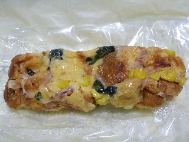
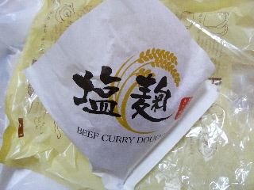
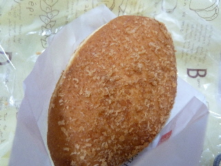
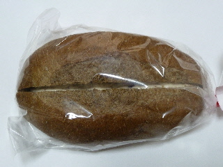
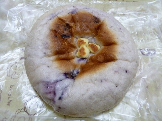
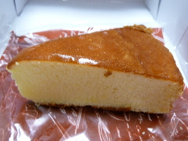
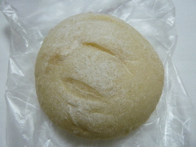
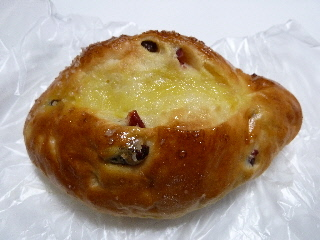

こころのキッシュスティック
2016/02/06
パンに具を付けてキッシュ風な感じになっていました。

水分が多いので重量感がありました。
具が多くていいですね。
お値段180円+税14円で計194円でした。
島根県出雲市小山町283-1
ツインタワーブレス1階
スタジオいずもさん隣り
2016/02/06
パンに具を付けてキッシュ風な感じになっていました。

水分が多いので重量感がありました。
具が多くていいですね。
お値段180円+税14円で計194円でした。
2013/01/13
同じ系列のパン屋さんでもよく見る商品ですが、いままで食べたことなかったです。
なんとなく塩麹ってブームが終わった感じがしていて、食べていなかったです。

マイルドな感じの甘めなカレーパンでした。
食べやすくて美味しいビーフカレーでした。

今日はホームセンターのナンバ出雲ドーム店でこのパンを買いました。
ページトップへ
2012/11/23
コーヒー豆みたいなパンですね。

買った時にお店の方が「このパンはコーヒー味で苦みがあります」って言ってたんですが、ホントに苦みがありました。
パン生地に珈琲が入っているみたいですね。
真ん中にはさんであるクリームと一緒に食べると、苦みが消えて、甘いコーヒー味のパンになりました。
面白い味でした。
2012/03/17
変わった色のパンですね。

ブルーベリーが練りこんであって甘いパンの中には、甘いクリームチーズが入っていました。
ダブルで甘くて美味しかったです。
また見つけたらきっと買うと思います。
2012/03/17
パン屋さん「こころ」で買ったチーズケーキです。

120円です。安くていいな。
パン屋さんらしく、パンのようなケーキでした。
チーズ蒸しパンに少し似てるかなって思いました。
ページトップへ
2011/06/05
白パンですね。

中にクリームチーズが入っているんですが、塩味系ではなく、甘いチーズクリームが入っていました。
個人的には、最近甘い系のチーズって食べていなかったので、ちょっと久々感があってよかったです。
甘いチーズってチーズケーキっぽくて好きです。
2011/06/04
出雲市小山町にあるパン屋さんcocoroに初めて行きました。
パン屋さんのベルクが引っ越したんじゃないか？って噂がありましたが、本当かどうかはわかりません。

買ったのは、フルーツの丘って名前のパンです。
柔らかいパンで、ドライフルーツが入っていました。砂糖もかかってて甘くて美味しかったですよ。
近くのケーキ屋さん